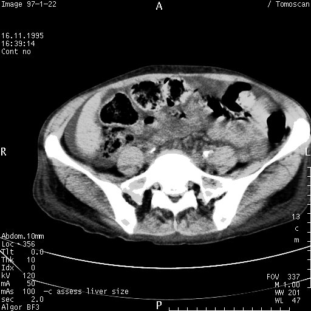
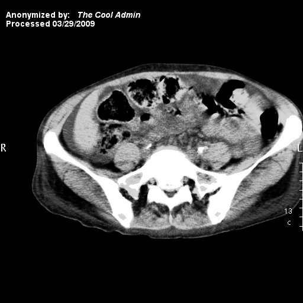

Tutorial 2: Easy and powerful DICOM anonymization
From trivial modifications to complex dataset handling with ruby-dicom
So you want to anonymize some DICOM files, huh? Admittedly there are a lot of (free) programs out there that will allow you to anonymize your DICOM files. Some of them will cost money though if you want to unlock more advanced features. With the Anonymizer class in ruby-dicom it's all free of course. It tries to offer everything ranging from the quick and simple to the more advanced, customized scenarios, all the while keeping it easy! Please have a look at its features. Chances are it will probably cover your needs, and should you discover that it falls short: Take a quick look at the source code: Work with it! Ruby code is surprisingly easy even if you don't have a lot of experience with it.
Alright, let us start with a list of what you'll need for this tutorial:
RMagick (Optional: Only needed if you want to edit pixel data)
This tutorial page will actually contain four separate tutorials. We will start off with a couple of simple anonymization examples. Then we will move on and use more advanced features like enumeration for replacement values, and for the last tutorial, we will go off the hook and anonymize burned-in information in the image data as well as burn in a small signature ourself!
Part 1: Quick & dirty single file anonymization
So you've got this really interesting DICOM sample file isolated on your drive, and you want to send it to someone on the outside (e.g. a research colleague, or (shudder to think) product support). However, the file does contain sensitive patient information, and you'd really like to remove that first. Rest assured, this can be achieved by just 4 simple lines of perfectly comprehensible, expressive ruby-dicom code:
require 'dicom'
dcm = DICOM::DObject.read('sensitive.dcm')
dcm.anonymize
dcm.write('clean.dcm')
Part 2: Perform a simple folder anonymization
Stepping it up a notch, you've now got this entire series of interesting DICOM images needing to be transmnitted out into the wild. The files are nicely isolated in a folder on your drive, awaiting that obligatory de-identification process. This is not much more difficult than the first example (indeed we shall achieve this in just three lines of code). However, since we are now dealing with multiple files, we will need to take a different approach, and invoke the Anonymizer class. In this example, all DICOM files contained in the given folder (including any sub-folders!) will be anonymized. As with the previous example, attributes are anonymized using a set of default settings. Note that unlike in the previous example, the files in this example will be overwritten with the anonymized version.
require 'dicom'
a = DICOM::Anonymizer.new
a.anonymize_path('/dicom/ct-series')
That's it! The anonymize method will print some information to the screen as it processes the DICOM files. Your output might look something like this:
irb(main):005:0> a.anonymize_path('/dicom/ct-series')
I, [2017-01-04T14:58:04.180086 #2784] INFO -- DICOM: 3 DICOM files have been prepared for anonymization.
I, [2017-01-04T14:58:04.211286 #2784] INFO -- DICOM: Anonymization complete.
Now I figure you might ask: Which tags were really anonymized here? By default, the following tags are anonymized (to change this, use the #set_tag() and #remove_tag() methods):
0008,0012 Instance Creation Date
0008,0013 Instance Creation Time
0008,0020 Study Date
0008,0021 Series Date
0008,0022 Acquisition Date
0008,0023 Image Date
0008,0030 Study Time
0008,0031 Series Time
0008,0032 Acquisition Time
0008,0033 Image Time
0008,0050 Accession Number
0008,0080 Institution name
0008,0081 Institution Address
0008,0090 Referring Physician's name
0008,1010 Station name
0008,1040 Institutional Department name
0008,1070 Operator's Name
0010,0010 Patient's name
0010,0020 Patient's ID
0010,0030 Patient's Birth Date
0010,0040 Patient's Sex
0010,1010 Patient's Age
0020,4000 Image Comments
Part 3: Advanced anonymization with enumeration and audit trail file
In the first example we just performed a simple anonymization using default settings. However, there are quite a few more 'advanced' settings available in the Anonymizer class that you might find useful. Such features include:
- Specifying a separate write path to store the anonymized files, instead of overwriting your existing files.
- Blanking all data element values instead of assigning a custom, general string value.
- Add or remove tags from the list of tags that will be anonymized.
- Specify that all private tags are to be deleted.
- Using an audit trail file for possible re-identification of anonymized dicom files.
- Randomizing file names.
Having talked a bit about features, it's time to get on with our example. What we are going to do here is make a small script that will anonymize a DICOM directory with enumeration and create an audit trail file. What, exactly, is that, you may ask? Let me explain:
With enumeration enabled, the anonymizer class will keep track of the values it encounters for all the data elements where this feature has been requested. In the first DICOM file, the value of the "Patient's Name" data element will be changed from say, "John Doe", to "Name1". All subsequent DICOM files that contain this name, will receive the same "Name1" value for that particular data element. When another name is encountered, the anonymized value will be bumped to "Name2". If several sets of DICOM files contain the same "Referring Physician's Name" they will all be anonymized with a value such as "Physician1".
In addition to using enumeration and an audit trail file, we will tell our Anonymizer to delete all private tags from the anonymized DICOM files (You never know what might be hiding in those unpredictable private tags, right?).
# Load the ruby-dicom library:
require 'dicom'
# Load an anonymization instance (and specifying an audit trail file):
a = DICOM::Anonymizer.new(audit_trail: 'audit_trail.txt')
# Request private data element removal:
a.delete_private = true
# In addition to the default selection of tags to be anonymized, we would like to add "Manufacturer" as well:
a.set_tag('0008,0070', :value => 'Manufacturer', :enum => true)
# Lets leave out "Institution Name" from the anonymization process:
a.remove_tag('0008,0080')
# Select the enumeration feature:
a.enumeration = true
# Avoid overwriting the original files by storing the anonymized files in a separate folder from the original files:
a.write_path = 'C:/dicom/source'
# Run the actual anonymization:
a.anonymize_path('C:/dicom/destination')
Lets name it anonymize.rb, execute and see how it goes. Your terminal output might end up looking something like this:
C:\dicom>ruby anonymize.rb
I, [2017-01-04T15:19:29.069984 #1824] INFO -- DICOM: 167 DICOM files have been prepared for anonymization.
I, [2017-01-04T15:20:54.269049 #1824] INFO -- DICOM: Anonymization complete.
Now, part of what we did here, was to create an audit trail file that enables us to re-identify the anonymized dicom files at a later time, if we want to. The information is stored in plain text using the json format. Lets take a look at the content of the audit trail file that was created for us:
{
"0008,1010": {
"CT1": "Station1",
"CT2": "Station2"
},
"0008,1040": {
"RadOnc": "Department1",
"Radiology": "Department2"
},
"0008,0070": {
"ACME": "Manufacturer1",
"Wayne Enterprise": "Manufacturer2"
},
"0008,0090": {
"Dr.Evil": "Physician1",
"Dr. Smith": "Physician2"
},
"0008,1070": {
"Jack Buttons": "Operator1",
"Connie Computer": "Operator2"
},
"0010,0010": {
"Peter Pelvis": "Patient1",
"Jackie Chan": "Patient2",
"Indiana Jones": "Patient3",
"Sara Sirius": "Patient4",
"Anna Sahara": "Patient5",
"John Doo": "Patient6",
"Richard Sick": "Patient7",
"Tommy Tumor": "Patient8"
},
"0010,0020": {
"12345": "ID1",
"11111": "ID2",
"666": "ID3",
"010101": "ID4"
},
"0008,0081": {
"Earth": "Address1",
"ISS": "Address2",
"Mars": "Address3"
},
"0008,0050": {
"A20": "1",
"B66": "2",
"S13": "3"
}
}
Part 4: Anonymizing burned-in image data
For this final part, we will manipulate the pixel data itself. This functionality is not built into the anonymizer class, and so we will be working directly with the DObject class instead. Our task here will be to wipe out any text that has been printed directly in the pixel data, and just to show off, we'll annotate the DICOM image with a little signature of our own.
In this example I will use a DICOM file that I found somewhere on the web. As such, its burned in content is not sensitive, but the principle remains: To show how to remove burned in text from the image. The original image is displayed below. In case you are unfamiliar with RMagick, I'll show you how the DICOM image data was extracted and converted to a jpg image:
require 'dicom'
require 'RMagick'
dcm = DICOM::DObject.read("myFile.dcm")
image = dcm.image.normalize
image.write("dicom.jpg")

What we are going to do now is make a small script that does the following:
- Reads the DICOM file and extracts the pixel data as a RMagick object.
- Defines a number of rectangles to cover the various areas of the image containing burned in text.
- Iterates through these (black) rectangles and paint them to our image object.
- Creates a bit of annotation and puts that in our image object.
- Puts the RMagick object back into the DICOM object and saves it to file.
require 'dicom'
require 'RMagick'
include Magick
# Load file and image:
dcm = DICOM::DObject.read("/home/dicom/burned.dcm")
# You might (or might not) want to normalize the gray scale:
image = dcm.image.normalize
# Create an array of 'black' rectangles:
rectangles = Array.new
rectangles << [0,0,300,100]
rectangles << [411,0,511,100]
rectangles << [0,380,100,511]
rectangles << [411,390,511,511]
rectangles << [0,420,511,511]
# Paste black rectangles on top of image:
rectangles.each do |r|
erase = Draw.new
erase.fill "Black"
erase.rectangle r[0], r[1], r[2], r[3]
erase.draw(image)
end
# Insert annotations:
text = Draw.new
text.fill = 'White'
text.pointsize = 14
text.annotate(image, 0, 0, 10, 30, "Anonymized by:")
t = Time.now
text.annotate(image, 0, 0, 10, 45, t.strftime("Processed %m/%d/%Y"))
text.font_style = ItalicStyle
text.annotate(image, 0, 0, 130, 30, "The Cool Admin")
# Insert pixel data back into the DICOM object and write to file:
dcm.image = image
dcm.write("/home/dicom/anonymous.dcm")
Now, let's have a look at the resulting DICOM image. Using the technique detailed earlier for extracting the pixel data and saving them as an image file, we get the following:

Hopefully, as of this moment, your anonymization skills should be sufficient to tackle whatever the local DICOM disciples at your work place throw at you. Using the scripting power of the Ruby language, along with ruby-dicom and RMagick, you should be able to do pretty much anything you want with your DICOM files as far as anonymization is concerned.
I hope you have found this tutorial helpful, and as always: All feedback is appreciated!
Published: March 30th 2009
Last updated: January 4th 2017
Christoffer Lervåg
chris.lervag @nospam.com @gmail.com